Cách làm cốt trà lài cho trà trái cây
Cốt trà lài (trà nhài) với hương thơm thanh tao, thoang thoảng cùng vị đậm đà là nền tảng hoàn hảo để pha chế các món trà trái cây nhiệt đới tươi mát. Dưới đây là công thức và quy trình kỹ thuật ủ trà chuẩn vị giúp giữ trọn hương thơm và màu sắc đẹp mắt.
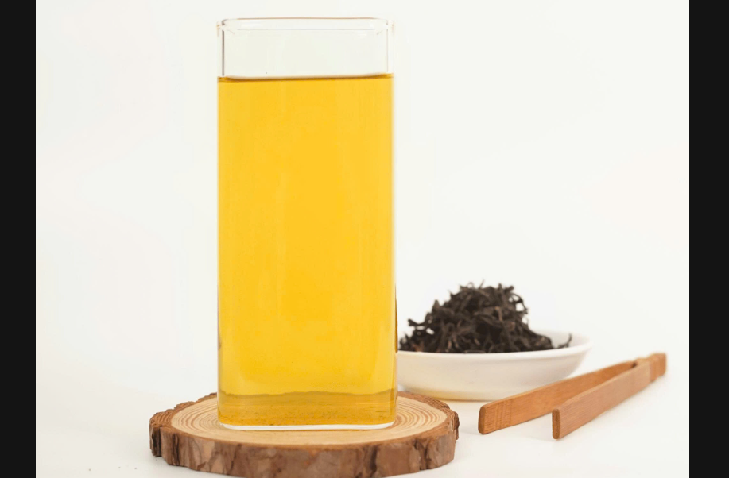
Tóm tắt các bước chính để thực hiện:
- Ủ trà lài (đúng nhiệt độ và thời gian)
- Chuẩn bị nguyên liệu ca chứa (đá và đường trái cây)
- Lọc tinh trà & Sốc nhiệt (giữ hương vị và bảo quản)
Nguyên liệu & Dụng cụ chuẩn bị:
Nguyên liệu:
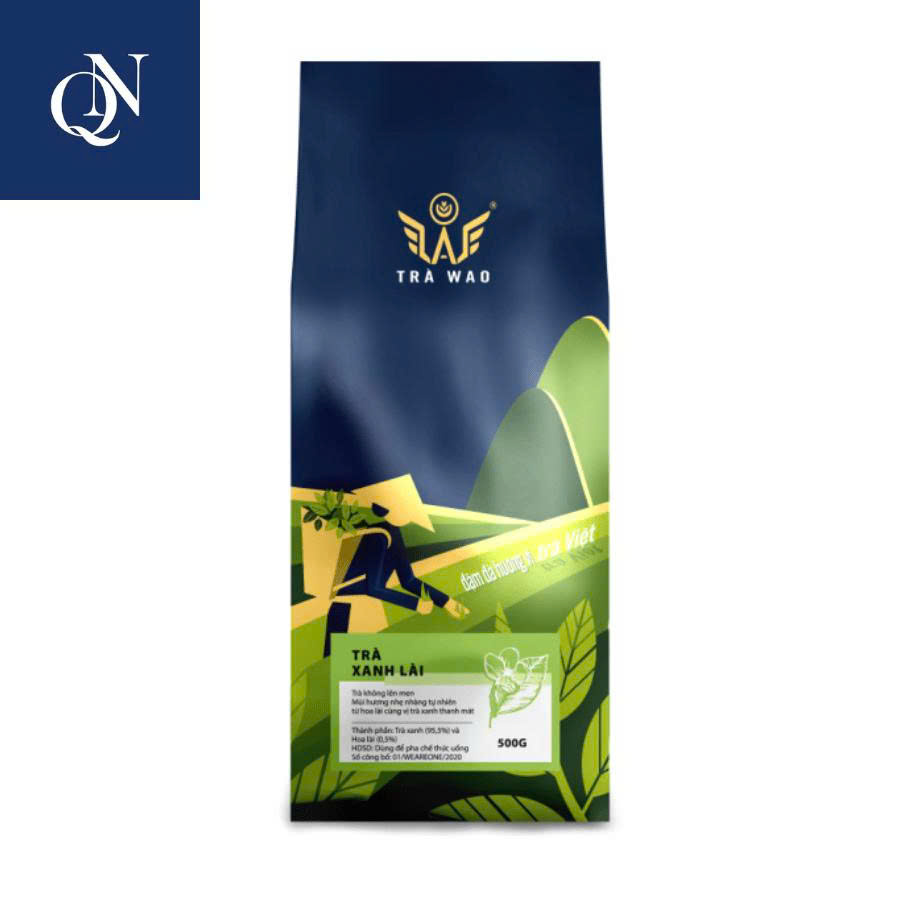
Trà lài
40 gram
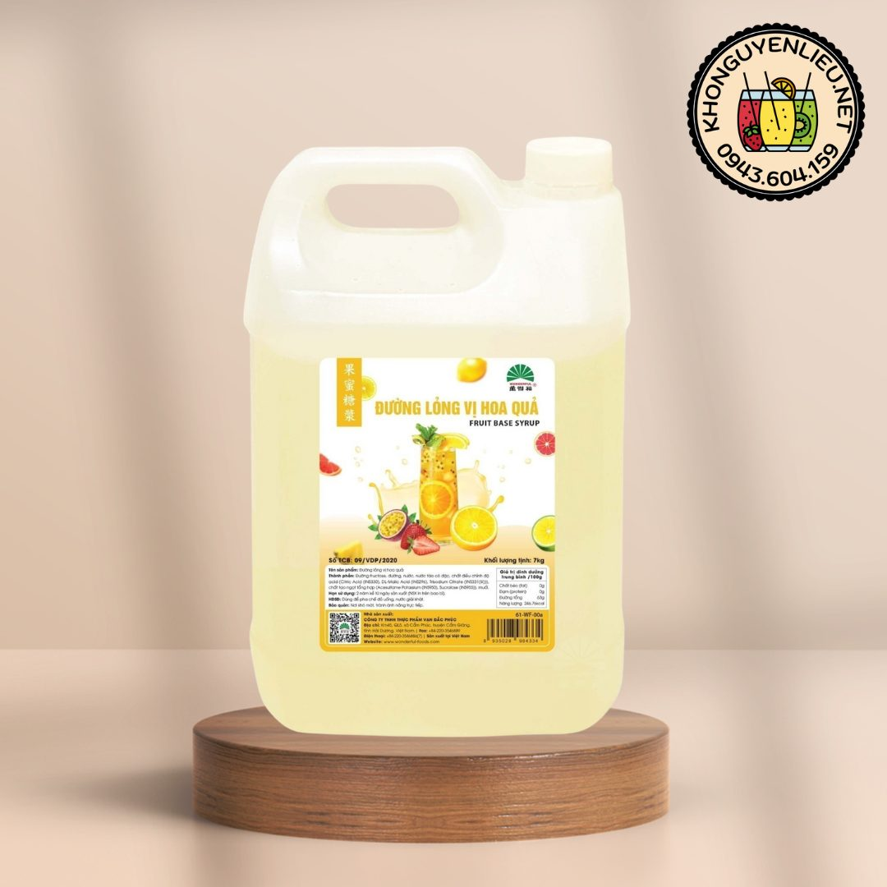
Đường trái cây
140 ml
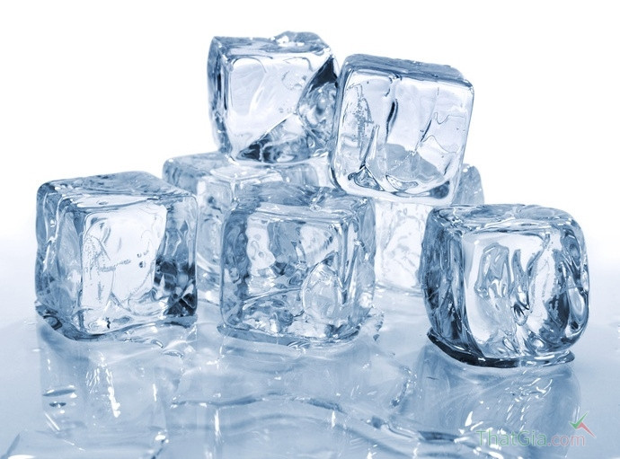
Đá sạch
500 gram
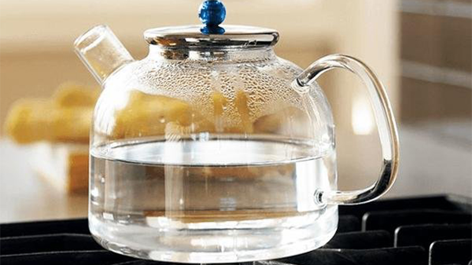
Nước sôi
1000 ml
Dụng cụ cần thiết:
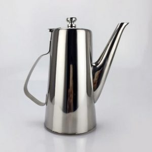
Bình trà lớn
Dùng để ủ trà

Ca lớn 2.8L
Chứa đá và đường
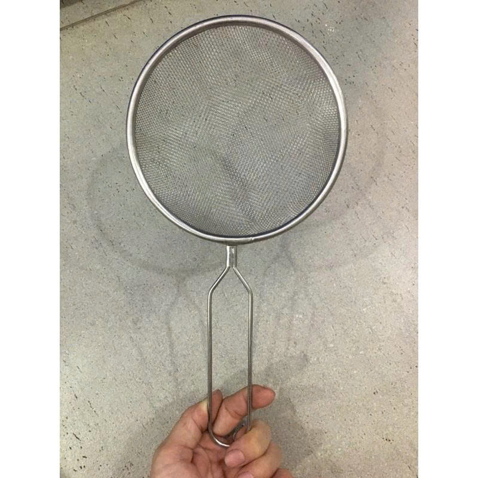
Màng lọc trà
Lọc sạch bã trà
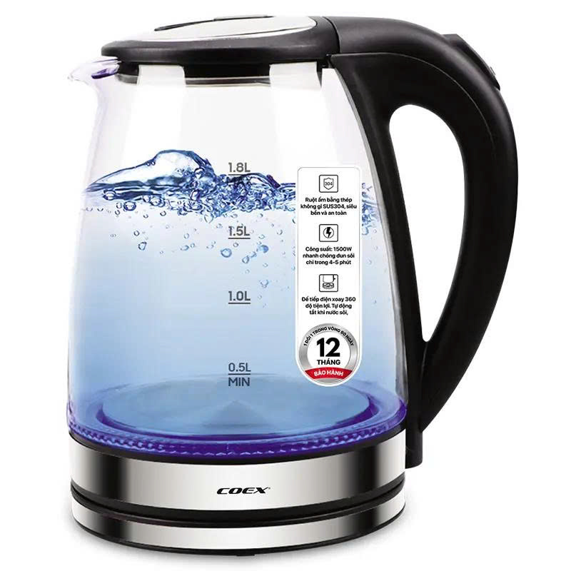
Ấm đun nước
Đun nước sôi 96°C
Các bước thực hiện chi tiết:
Bước 1: Cho trà vào bình & Ủ trà
Cho 40 gram trà lài vào bình trà lớn. Đun nước sôi, đợi một chút để nhiệt độ hạ xuống khoảng 96 độ C thì rót 1000ml nước sôi vào bình đã đong trà. Đóng nắp bình và để ủ trà trong vòng 8 phút để trà ra hết tinh chất.
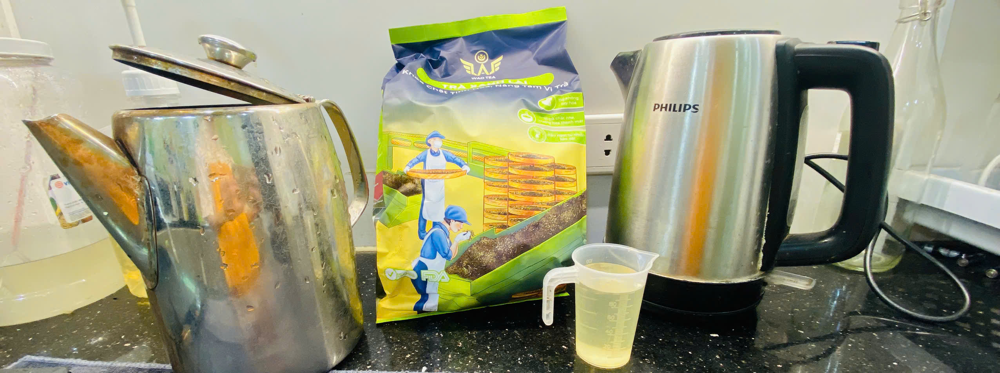
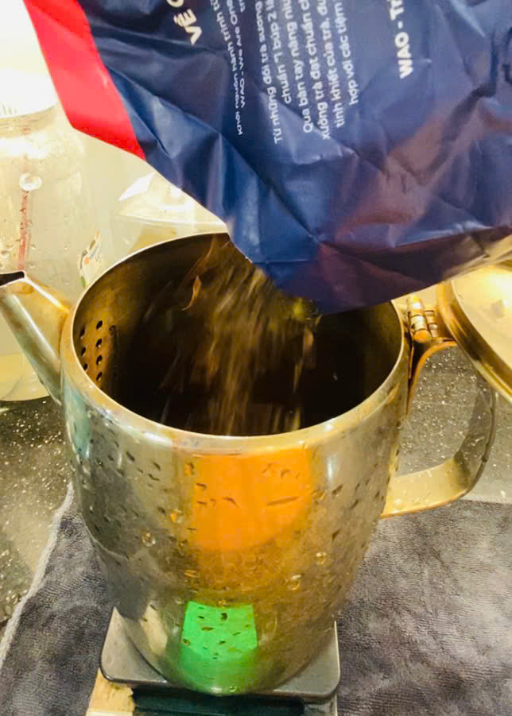
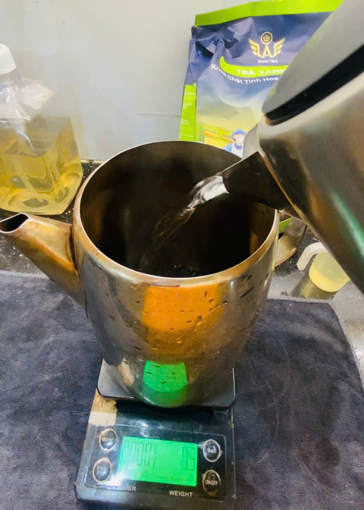
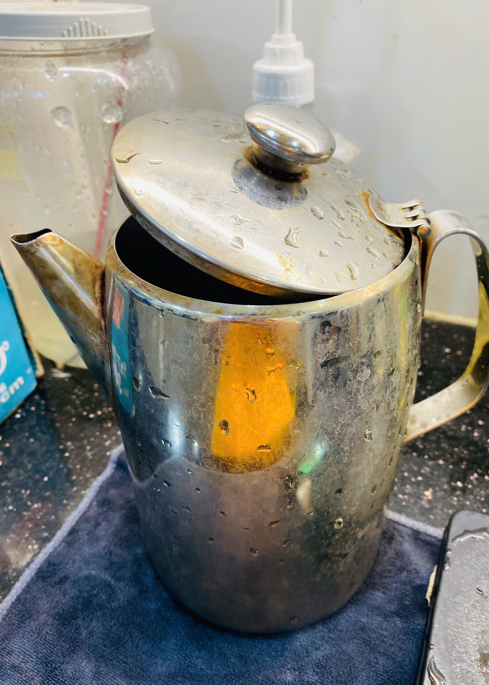
Bước 2: Chuẩn bị ca chứa lớn
Trong thời gian chờ đợi ủ trà, bạn tiến hành đong 140ml đường trái cây và 500gram đá sạch cho tất cả vào ca chứa lớn dung tích 2.8L.
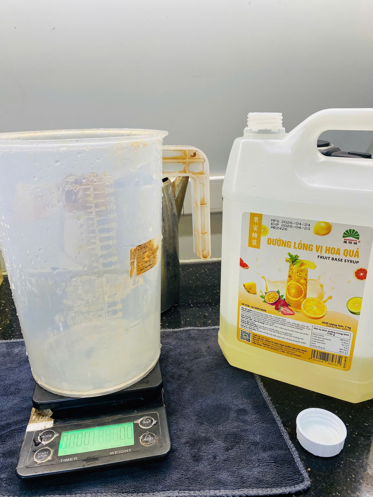
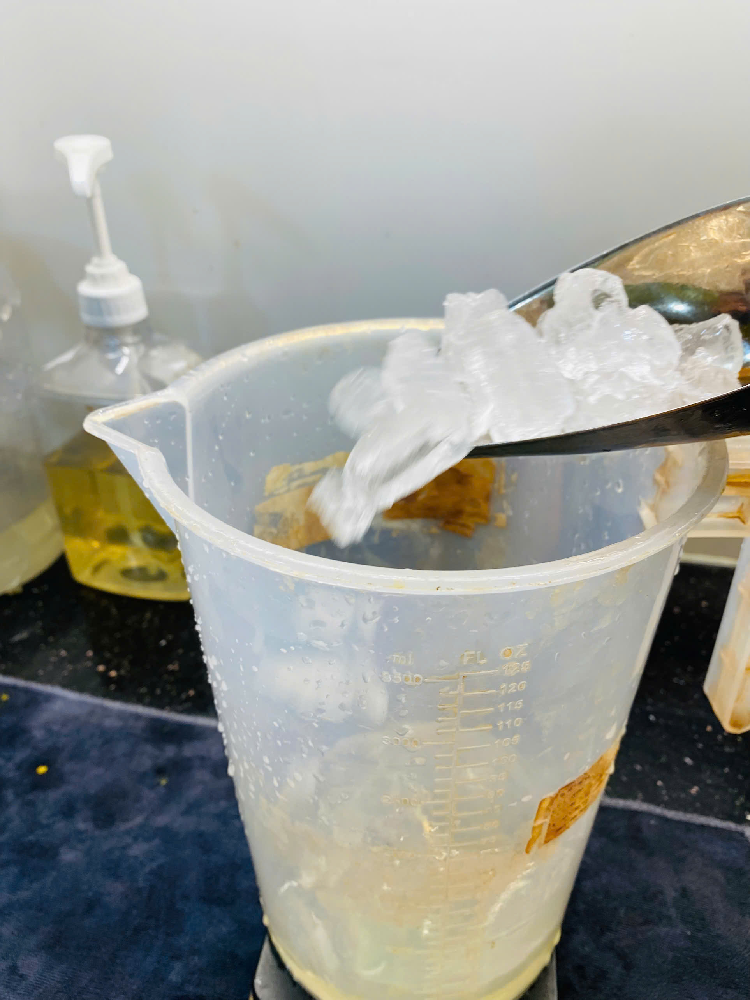
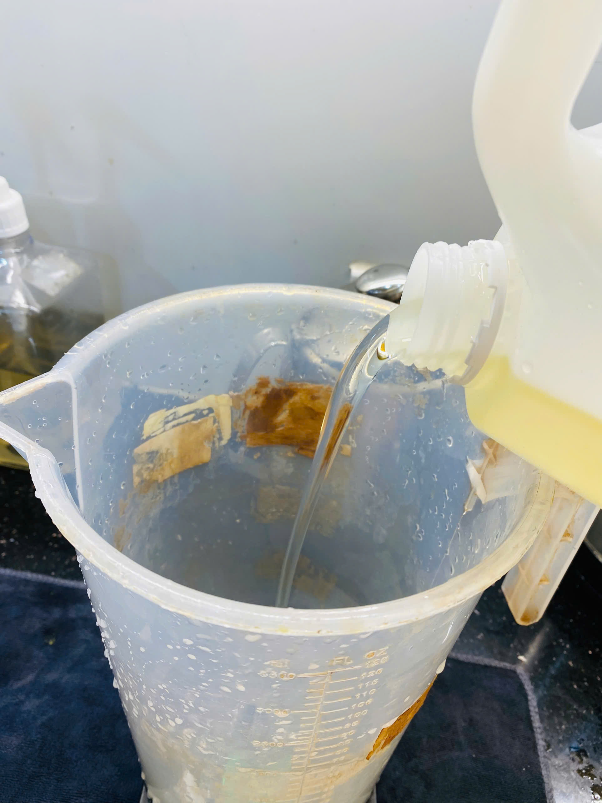
Bước 3: Lọc tinh trà & Bảo quản
Sau khi hết 8 phút ủ trà, dùng màng lọc tinh trà đặt lên miệng ca chứa nguyên liệu (ca có đá và đường ở Bước 2). Rót trà từ từ theo hình xoắn ốc để lọc sạch bã trà và lấy được trọn vẹn phần tinh trà. Khuấy thật đều tay cho đến khi đá tan hết hoàn toàn. Cho cốt trà vào ngăn mát tủ lạnh để bảo quản.
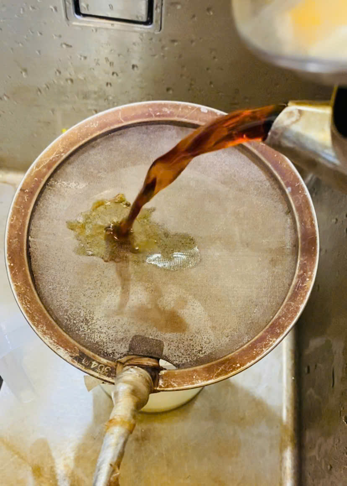
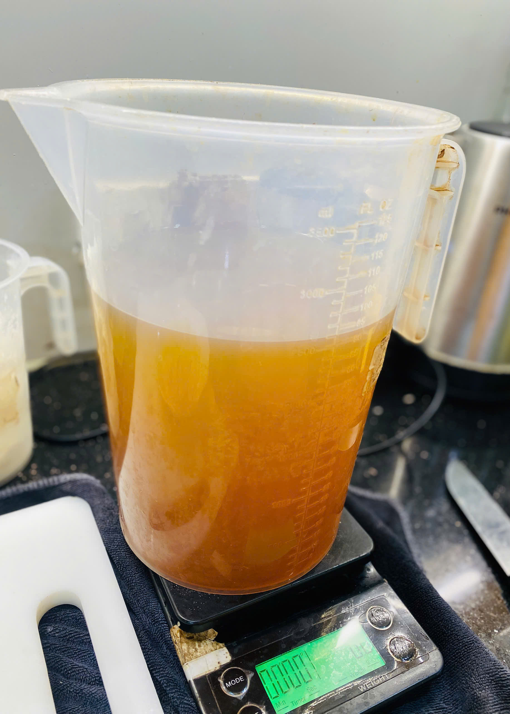
LƯU Ý KHI LÀM CỐT TRÀ LÀI:
- Nhiệt độ nước chuẩn xác: Cần giữ nước ở mức khoảng 96 độ. Nếu nước quá sôi (100 độ) sẽ khiến trà lài dễ bị chát đắng và nồng, còn nước quá nguội thì trà không dậy hết mùi thơm.
- Kỹ thuật rót xoắn ốc: Giúp dòng nước trà được phân bổ đều qua màng lọc, hòa quyện tốt hơn và thu được nước trà trong, không bị cặn.
- Sốc nhiệt bằng đá: Việc khuấy tan đá nhanh chóng giúp làm lạnh đột ngột (sốc nhiệt), giúp giữ được hương thơm đặc trưng của trà lài không bị bay hơi và cốt trà bảo quản được lâu hơn trong ngăn mát.
Bây giờ bạn đã có một bình cốt trà lài chuẩn vị, đậm đà để sẵn sàng kết hợp với các loại syrup trái cây hay hoa quả tươi rồi! Chúc bạn pha chế thành công!